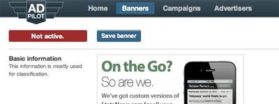
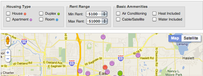

What it is, jive turkey? My name is Mike Joseph and I'm a web & mobile developer who focuses on simple solutions to complex problems. I've been developing on the web since 1994 and am still amazed by the power of the platform. I love proving the stereotype of the typical web developer wrong.
I've been married since 2004, a dad since 2006 and a fan of terrible horror and sci-fi films for as long as I can remember. I may or may not be a killer robot from the future. I'm legally barred from commenting on that at this time.
Gryphon is a content management system used by many different folks. It's growing client base is supported by these cats. Gryphon provides an end-to-end, platform agnostic publishing platform for small to medium sized news organisations.

AdPilotX, along with this open source api (which I also made), provides a clean, consistant, simple interface for the very complex OpenX web ad management system.

Roost & Ceres are addon packages for Gryphon which allow news organisations to easily create and manage dining and housing guides for their respective localities.
Plus various and sundry smaller projects.
- A web application developer & designer
- A mobile developer & designer
- An interface developer
- A systems administrator
- A project manager
- An educator
- Semantic HTML and CSS
- Javascript, both client and server side
- PHP, Python and Perl
- Crafting easy to use mobile interfaces
- Simple solutions to complex problems
- Learning something new
- Candle light dinners... on the beach
Email me
Download my resume
 twitter.com/mikejoseph
twitter.com/mikejoseph
 mikejoseph.tumblr.com
mikejoseph.tumblr.com